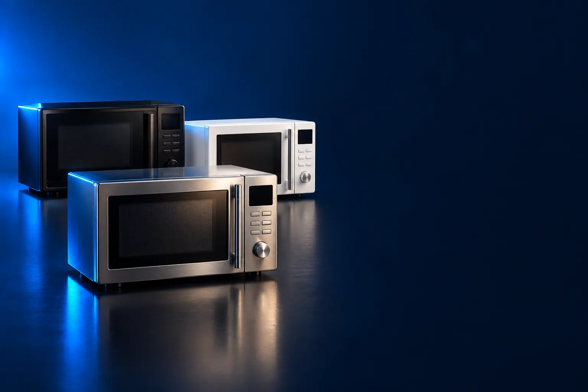

COMPACTO (20 A 21 L)
Melhor micro-ondas compacto custo-benefício
Para esquentar, descongelar e fazer pipoca ocupando pouco espaço.

Melhor custo-benefício em micro-ondasMidea MasterCook 20 L
CURADORIA TECHAPROVADO · 2026
Micro-ondas se escolhe pelo tamanho da família e pelo que você quer além de esquentar. Separamos 8 modelos em 3 perfis e dizemos para quem cada um vale a pena.

NOSSA LEITURA
Sozinho ou em casal, 20 litros bastam. Família pede 30 litros ou mais. Se você quer dourar ou fritar sem óleo, procure grill ou air fryer.
COMECE POR AQUI
COMPACTO (20 A 21 L)
Para esquentar, descongelar e fazer pipoca ocupando pouco espaço.
FAMÍLIA (30 L OU MAIS)
Cabe travessa e prato grande: para quem cozinha para 4 ou mais.

GRILL, AIR FRYER E EMBUTIR
Doura, gratina e frita sem óleo, além de esquentar.

A FICHA, TRADUZIDA
01 - CAPACIDADE
A capacidade é o volume interno. O que importa na prática é o diâmetro do prato giratório: em 20 litros cabe um prato raso; em 30 litros ou mais, travessa e prato fundo grande.
Sozinho ou casal: 20 a 21 L. Família de 3 a 4: 30 a 34 L. Quem esquenta travessa grande com frequência: 34 L ou mais.
Meça a bancada: os de 34 L têm cerca de 50 cm de largura e precisam de espaço livre em cima e atrás para ventilar.
02 - POTÊNCIA
A potência de saída (em watts) define a velocidade de aquecimento. Modelos de 700 W esquentam um pouco mais devagar que os de 900 a 1.000 W.
Para o dia a dia, a diferença é de segundos. As receitas pré-programadas já ajustam o tempo conforme a potência.
Não confunda potência de saída com consumo: o consumo é maior, e é ele que aparece na conta de luz.
03 - GRILL E AIR FRYER
O micro-ondas comum só esquenta: a comida não fica dourada. O grill tem uma resistência no teto que doura e gratina. A convecção circula ar quente como um forno.
A função air fryer combina convecção e grill para fritar sem óleo. Vale para quem quer liberar espaço na bancada.
Use só recipientes indicados para grill e convecção: plástico comum não aguenta.
04 - VOLTAGEM
Micro-ondas são de uma voltagem só, e cada versão tem anúncio separado. Nesta lista indicamos a voltagem de cada link.
Ligar na voltagem errada pode queimar o aparelho e anular a garantia.
Use tomada própria, sem extensão: o micro-ondas puxa muita corrente.
A CURADORIA EM DETALHE
8 modelos da pesquisa
PERFIL · 2 MODELOS, DA ENTRADA AO TOP DE LINHA
Os micro-ondas de 20 a 21 litros cabem em bancadas pequenas e dão conta de esquentar comida, descongelar e fazer pipoca. São ideais para quem mora sozinho, casal e cozinhas pequenas.
COMPACTO · CUSTO-BENEFÍCIO 1 de 2
Melhor custo-benefício em micro-ondas
6 funções MasterCook · função silêncio · 110 V
Ver preço na AmazonPOR DENTRO DA ESCOLHA
Micro-ondas de 20 litros com botão MasterCook de 6 funções (derreter, vapor, cozinhar, fermentar, desidratar e assar), receitas pré-programadas, tecla +30 segundos, função limpar e função silêncio.
O mais barato que passou nos filtros, com função silêncio para quem esquenta comida de madrugada.
| Capacidade | 20 L |
|---|---|
| Voltagem | 110 V |
| Extras | MasterCook, função silêncio |
Fonte: ficha e descrição do anúncio, conferidas em 02/11/2026. Dados informados pelo fabricante.

COMPACTO · TOP DE LINHA 2 de 2
Top de linha compacto
10 níveis de potência · 3 memórias · 127 V
Ver preço na AmazonPOR DENTRO DA ESCOLHA
Micro-ondas de 21 litros e 700 W com 10 níveis de potência, 3 receitas pré-programadas (pipoca, arroz e brigadeiro) e 3 posições de memória.
As memórias guardam o tempo das receitas de sempre.
| Capacidade | 21 L |
|---|---|
| Potência | 700 W |
| Voltagem | 127 V |
Fonte: ficha e descrição do anúncio, conferidas em 02/11/2026. Dados informados pelo fabricante.
PERFIL · 3 MODELOS, DA ENTRADA AO TOP DE LINHA
A partir de 30 litros, o prato giratório é maior e cabe travessa, prato fundo e pote grande. Para família, também ajudam funções como manter aquecido e tira odor.
FAMÍLIA · CUSTO-BENEFÍCIO 1 de 3
Melhor custo-benefício para família
Tira odor · manter aquecido · trava do painel · 127 V
Ver preço na AmazonPOR DENTRO DA ESCOLHA
Micro-ondas de 34 litros com funções tira odor e manter aquecido, trava do painel (segurança com crianças), tecla relógio e função mudo para o bipe.
Custa quase o mesmo que um compacto e tem 34 litros.
| Capacidade | 34 L |
|---|---|
| Voltagem | 127 V |
| Extras | Tira odor, manter aquecido, trava |
Fonte: ficha e descrição do anúncio, conferidas em 02/11/2026. Dados informados pelo fabricante.

FAMÍLIA · ALTERNATIVA 2 de 3
Outro caminho: eficiência A e antibactéria
Eficiência A · desodorizador · 6 receitas · 127 V
Ver preço na AmazonPOR DENTRO DA ESCOLHA
Micro-ondas de 34 litros inox com eficiência energética A, desodorizador que elimina cheiro de receitas anteriores, 6 receitas pré-programadas e 3 memórias.
Mesmo tamanho do Electrolux, com selo A de eficiência e acabamento inox.
| Capacidade | 34 L |
|---|---|
| Eficiência | A |
| Voltagem | 127 V |
Fonte: ficha e descrição do anúncio, conferidas em 02/11/2026. Dados informados pelo fabricante.

FAMÍLIA · TOP DE LINHA 3 de 3
Top de linha para família
Painel que some com a porta fechada · manter aquecido · 127 V
Ver preço na AmazonPOR DENTRO DA ESCOLHA
Micro-ondas de 31 litros com porta espelhada e painel integrado: com a porta fechada, só aparecem os botões mais usados. Tem tira odor e manter aquecido.
O degrau é o acabamento: inox espelhado e painel escondido.
| Capacidade | 31 L |
|---|---|
| Acabamento | Inox espelhado |
| Voltagem | 127 V |
Fonte: ficha e descrição do anúncio, conferidas em 02/11/2026. Dados informados pelo fabricante.
PERFIL · 3 MODELOS, DA ENTRADA AO TOP DE LINHA
Alguns micro-ondas também douram, gratinam e até fritam sem óleo, substituindo outro aparelho na bancada. Os de embutir ficam no armário planejado e liberam a bancada.
GRILL E AIR FRYER · CUSTO-BENEFÍCIO 1 de 3
Melhor custo-benefício com grill
Grill · painel integrado · inox espelhado · 110 V
Ver preço na AmazonPOR DENTRO DA ESCOLHA
Micro-ondas de 32 litros com função grill para dourar e gratinar, painel integrado com controle por toque, acabamento inox espelhado e eficiência energética A.
O grill resolve o que o micro-ondas comum não faz: deixar a comida dourada. Os 32 litros cabem uma travessa de lasanha de família.
| Capacidade | 32 L |
|---|---|
| Funções | Micro-ondas e grill |
| Eficiência | A |
| Voltagem | 110 V |
Fonte: ficha e descrição do anúncio, conferidas em 08/11/2026. Dados informados pelo fabricante.

GRILL E AIR FRYER · ALTERNATIVA 2 de 3
Outro caminho: de embutir
Embutir · display autodesliga · tira odor · 220 V
Ver preço na AmazonPOR DENTRO DA ESCOLHA
Micro-ondas preto de 34 litros para embutir em armário planejado, com painel digital, display que se desliga sozinho, menu descongelar, manter aquecido e tira odor.
Não doura nem frita: o diferencial é o encaixe no armário.
| Capacidade | 34 L |
|---|---|
| Instalação | Embutir |
| Voltagem | 220 V |
Fonte: ficha e descrição do anúncio, conferidas em 02/11/2026. Dados informados pelo fabricante.

GRILL E AIR FRYER · TOP DE LINHA 3 de 3
Top de linha 4 em 1
4 em 1 · fritura sem óleo · convecção · 127 V
Ver preço na AmazonPOR DENTRO DA ESCOLHA
Micro-ondas 4 em 1 de 30 litros: micro-ondas, air fryer (fritura sem óleo), grill e convecção, que circula ar quente para assar como um forno.
O primeiro micro-ondas air fryer do Brasil, segundo a Panasonic. Substitui até três aparelhos.
| Capacidade | 30 L |
|---|---|
| Funções | Micro-ondas, air fryer, grill, convecção |
| Voltagem | 127 V |
Fonte: ficha e descrição do anúncio, conferidas em 02/11/2026. Dados informados pelo fabricante.
Nenhum modelo encontrado. Tente outro termo ou volte para Todos.
LADO A LADO
| Modelo | Perfil | Posição | Capacidade | Destaque |
|---|---|---|---|---|
| Midea MasterCook 20 L | Compacto | Custo-benefício | 20 L | 6 funções MasterCook · função silêncio · 110 V |
| Panasonic 21 L (NN-ST25LWRU) | Compacto | Top de linha | 21 L | 10 níveis de potência · 3 memórias · 127 V |
| Electrolux 34 L (MEO44) | Família | Custo-benefício | 34 L | Tira odor · manter aquecido · trava do painel · 127 V |
| Panasonic 34 L Inox Antibactéria (NN-ST67LSRU) | Família | Alternativa | 34 L | Eficiência A · desodorizador · 6 receitas · 127 V |
| Electrolux 31 L Inox Painel Integrado (MI41S) | Família | Top de linha | 31 L | Painel que some com a porta fechada · manter aquecido · 127 V |
| Brastemp 32 L com Grill (BMG45AR) | Grill e air fryer | Custo-benefício | 32 L | Grill · painel integrado · inox espelhado · 110 V |
| Electrolux de Embutir 34 L (ME3EP) | Grill e air fryer | Alternativa | 34 L | Embutir · display autodesliga · tira odor · 220 V |
| Panasonic 30 L Air Fryer, Grill e Convecção (CD89) | Grill e air fryer | Top de linha | 30 L | 4 em 1 · fritura sem óleo · convecção · 127 V |
CONSIDERAÇÕES FINAIS
Micro-ondas têm preços próximos entre modelos parecidos, por isso cada perfil tem poucos degraus. Indicamos a voltagem de cada link.
O Electrolux 34 L (MEO44): custa quase o mesmo que um compacto e serve para família.
20 litros para 1 ou 2 pessoas; 30 litros ou mais para família.
Sim, para porções menores. Para família grande, uma air fryer dedicada tem cesta maior.
Para cozinha planejada, sim: libera a bancada. Exige nicho com ventilação.
Porque ele muda várias vezes por dia. O botão leva ao valor atualizado na loja.
TRANSPARÊNCIA EDITORIAL
Separamos os micro-ondas pelo tamanho e pelas funções e conferimos a voltagem de cada link. Cada modelo precisa responder com clareza "para quem ele é o certo".
Em cada perfil há modelos em faixas de preço diferentes, e cada degrau precisa entregar algo que o anterior não entrega. Dois modelos com a mesma proposta não entram juntos.
Ficha e especificações foram conferidas nos anúncios das lojas em 02/11/2026.
Os links de compra desta página são de afiliado: se você comprar por eles, o TechAprovado pode ganhar uma comissão, sem custo adicional para você. Isso não muda a ordem nem a escolha dos produtos.
📲 GUIAS E DICAS NO SEU FEED
Dicas práticas antes de comprar, em carrosséis e vídeos curtos, sempre com link para o guia completo.